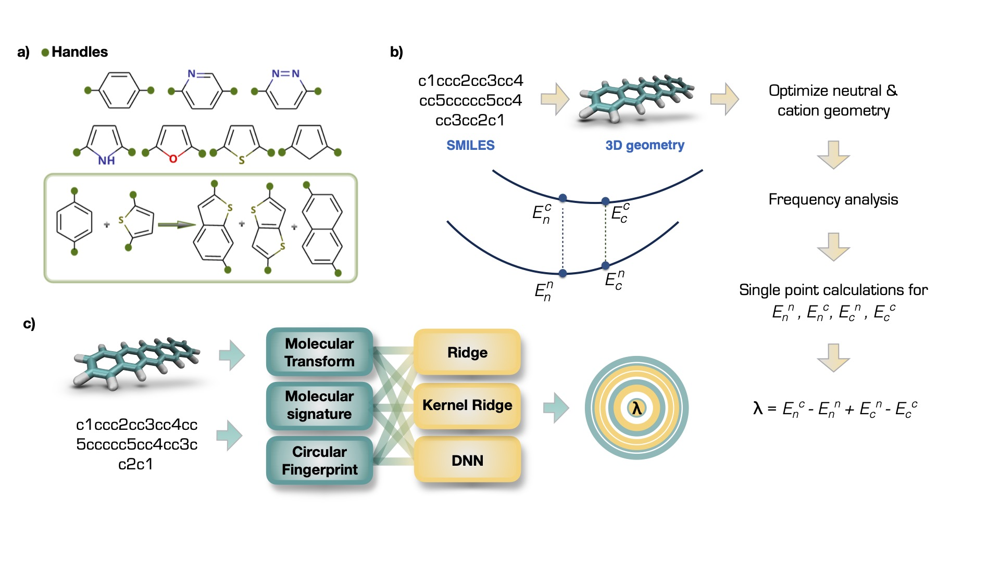
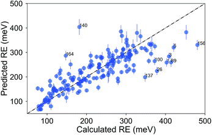

Organic semiconductors are an important class of (opto)electronic materials, with a wide range of potential applications from photovoltaics to artificial nerves. The goal of this project was to enable large-scale screening for high-performance organic semiconductors by rapid prediction of reorganization energy using machine-learning methods. It was on the cover of ACS magazine JPCA.
The project involved creation of a dataset (a), calculation of the reorganization energy with DFT methods (b), and prediction of the reorganization energy (c). The reorganization energy is depicted as greek Lambda is the target value.

I curated acompound set of 171, which was derived from known p-type OSCs built from moieties such as acenes, thiophenes, and pentalenes and studied the structure-property relationships. It was highlighted on the themed collection: Celebrating recent achievements in chemical science in Turkiye.
Here is a recent notebook where I explored clustering and interactive plotting with molplotly using this dataset.